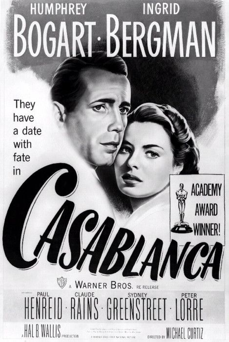
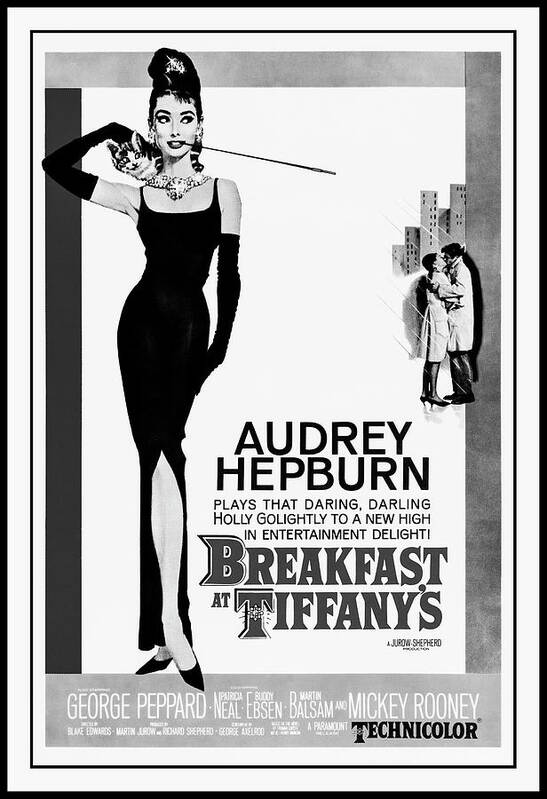
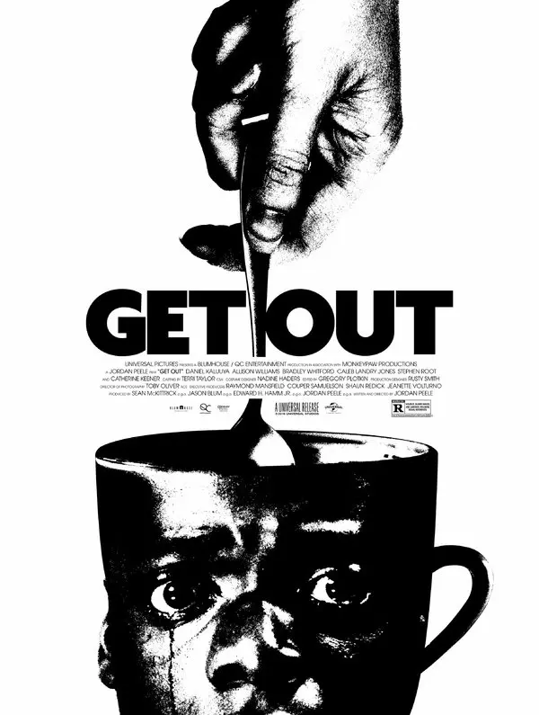
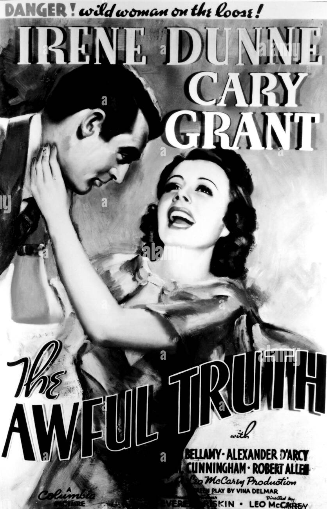
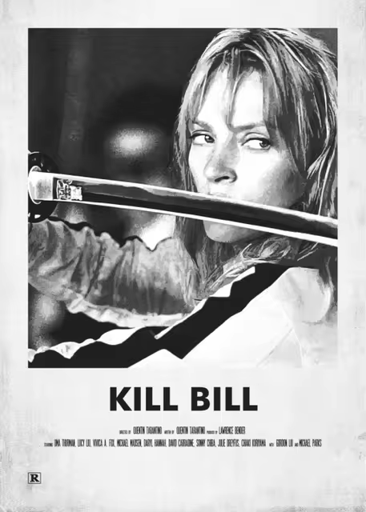
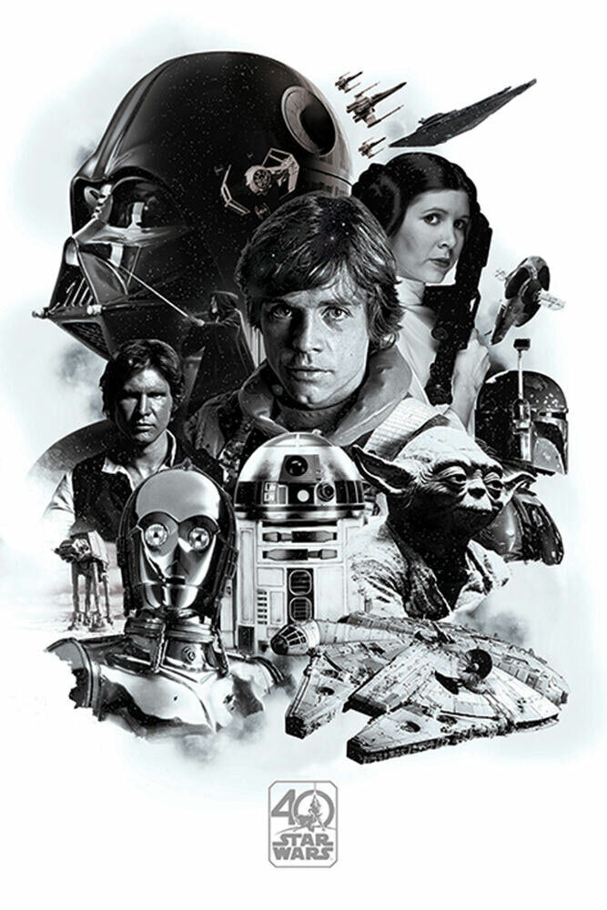
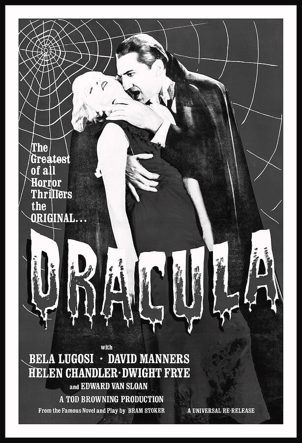
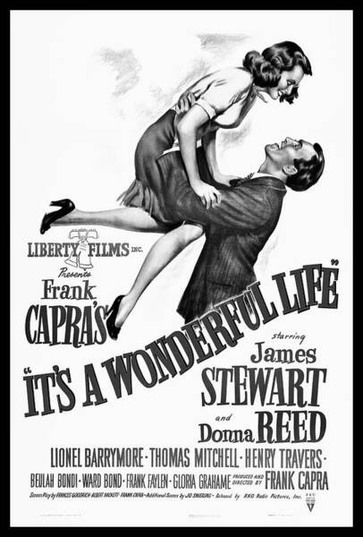
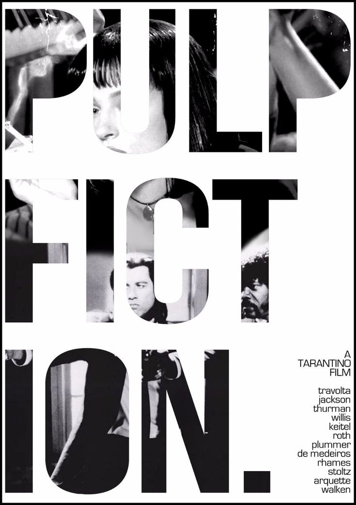

M O V I E S

Casablanca (1942) is a romantic drama set during World War II, where nightclub owner Rick Blaine is reunited with his former lover Ilsa Lund in German-occupied Casablanca. Ilsa and her husband, Resistance leader Victor Laszlo, seek Rick's help to escape the Nazis. Torn between love and duty, Rick must decide whether to help them or pursue his own desires. The film is a classic tale of sacrifice, patriotism, and lost love.
BOOK NOW
Casablanca

Breakfast at Tiffany's (1961) is a romantic comedy-drama about Holly Golightly (Audrey Hepburn), a charming but enigmatic socialite in New York City, and her budding relationship with her neighbor, Paul Varjak (George Peppard), a struggling writer. As their lives intertwine, Holly's free-spirited facade masks her vulnerability and search for belonging.
BOOK NOW
Breakfast at Tiffany's

Get Out (2017) is a psychological horror-thriller about Chris, a Black man who visits his white girlfriend Rose's family estate, only to uncover a sinister secret beneath their warm facade. As the family's disturbing behavior escalates, Chris discovers he's trapped in a terrifying conspiracy. The film explores race, trust, and survival with sharp social commentary.
BOOK NOW
Get out

The Awful Truth (1937) is a screwball comedy about Jerry and Lucy Warriner, a couple whose mutual distrust leads to divorce. As they try to move on, their antics and jealousy reveal their lingering love for each other. Hilarious misunderstandings and witty banter drive this classic tale of reconciliation.
BOOK NOW
The Awful Truth

Rocky (1976) is an underdog story about Rocky Balboa, a small-time boxer from Philadelphia who gets a once-in-a-lifetime shot at the heavyweight title. Facing champion Apollo Creed, Rocky trains tirelessly to prove his worth. Along the way, he finds love with shy pet shop worker Adrian. The film is a heartfelt tale of determination, resilience, and personal triumph.
BOOK NOW
Rocky
Black Swan (2010) follows Nina Sayers, a perfectionist ballerina competing for the lead role in Swan Lake. As she battles with her inner demons and the pressure of the role, Nina becomes consumed by jealousy and paranoia. Her psyche fractures as she strives to embody both the innocent White Swan and the dark Black Swan. The film explores themes of identity, obsession, and the cost of artistic ambition.
BOOK NOW
Black Swan

Kill Bill: Volume 1 (2003) follows The Bride, a former assassin seeking revenge on the members of the Deadly Viper Assassination Squad who betrayed her. After surviving an attempt on her life, she hunts them down one by one. The film is packed with stylized martial arts battles, including iconic sword fights. Directed by Quentin Tarantino, it combines influences of samurai, grindhouse, and western cinema.
BOOK NOW
Kill Bill: Volume 1

Star Wars: Episode I - The Phantom Menace (1999) follows Jedi Qui-Gon Jinn and Obi-Wan Kenobi as they protect Queen Amidala from a Trade Federation invasion. They discover Anakin Skywalker, a boy strong in the Force, and uncover a Sith plot. The film introduces key characters and sets the stage for the rise of the Empire. It blends adventure, politics, and the beginning of Anakin’s journey.
BOOK NOW
Star Wars: Episode I - The Phantom Menace

The Invisible Man (1933) follows scientist Griffin, who discovers a way to make himself invisible but becomes increasingly unhinged. As he struggles with his newfound power, Griffin turns violent and terrorizes those around him. His descent into madness leads to chaos, as he tries to avoid capture. The film is a blend of horror and suspense, exploring the consequences of unchecked scientific ambition.
BOOK NOW
The Invisible Man

Dracula (1931) tells the story of Count Dracula, a vampire who travels from Transylvania to England to spread his curse. He becomes infatuated with Mina, the fiancée of her friend Jonathan Harker, and begins to prey on her. As Dracula’s influence grows, Harker and his allies try to stop him and save Mina. The film is a classic Gothic horror, exploring themes of desire, fear, and immortality.
BOOK NOW
Dracula

It's a Wonderful Life (1946) follows George Bailey, a man on the brink of suicide, who is shown by an angel how much his life has impacted others. Through flashbacks, he sees the positive effects of his sacrifices on his family, friends, and community. The film explores themes of love, self-worth, and the importance of human connection. It is a heartwarming tale of redemption and the value of a single life.
BOOK NOW
It's a Wonderful Life

Pulp Fiction (1994) intertwines several stories, including hitmen Vincent and Jules, a boxer, and a gangster’s wife. The film explores fate, redemption, and violence through its nonlinear narrative. Directed by Quentin Tarantino, it’s known for its witty dialogue and bold storytelling. Pulp Fiction became iconic for its unique structure and memorable characters.
BOOK NOW
Pulp Fiction